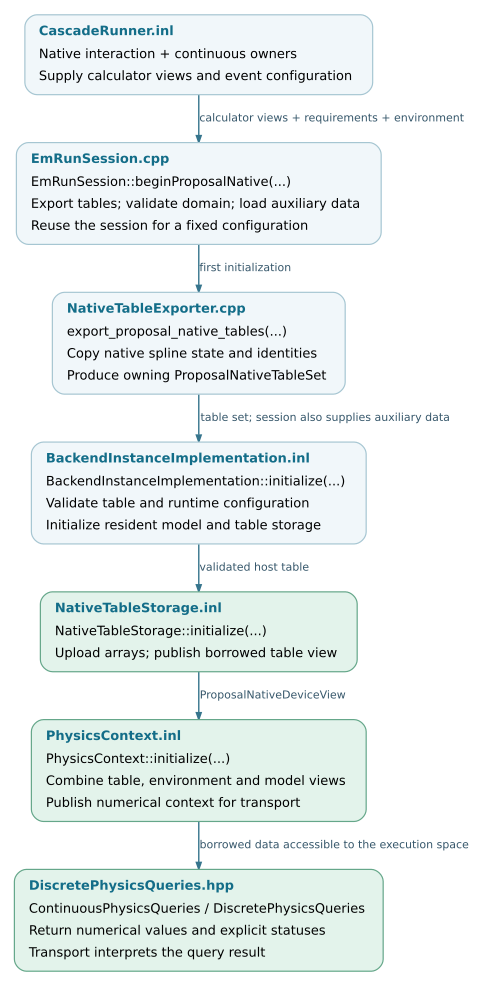

Physics models and table preparation
The native C8 PROPOSAL modules own the configured calculators. The Kokkos integration exports their interpolation state, validates its format and physical coverage, and uploads it into backend-owned arrays. Transport queries those arrays through device-callable interpolation and inverse routines.
This chapter describes model preparation, table representation and the interfaces consumed by transport. It complements Environment and geometry, which describes the geometry and material parameters supplied to the same backend.
Note
Source baseline: d5297c43.
This chapter covers the proposal-native data path used by the standard
Kokkos EM backend. EGS4, hadronic generators and radio propagation data have
separate preparation contracts. Exporting PROPOSAL data does not make its
library objects device-callable.
Data preparation layers
Component |
Input |
Result and responsibility |
|---|---|---|
C8 PROPOSAL modules |
Selected particle definitions, medium composition, models and cuts. |
Native calculators, including their interpolation tables and CPU interaction interfaces. |
|
Read-only views of the native interaction and continuous calculators. |
An owning |
|
A validated table set and optional allocation budget. |
Arrays in the selected execution space and a borrowed
|
Auxiliary model preparation |
Configured material and model information. |
Moliere and LPM parameters and derived support data; these are distinct from the native rate, loss and range tables. |
|
Physics views, auxiliary model data, environment, geometry and event configuration. |
The borrowed numerical context consumed by resident transport kernels. |
Three contracts are particularly important for maintenance. The distance sampler uses a separate total-rate interpolant, whereas channel selection uses an ordered sum of individual columns. A cumulative-rate table is not itself a normalized CDF. Finally, a process can have a rate and energy-loss table while still lacking the data needed to construct its complete final state.
Source organization
The host exporter is separate from the table records, execution-space storage and numerical query functions. Public declarations, template implementations and compiled implementation files are listed below with links to the checked revision.
corsika/kokkos/em/ ├── EmRunSession.hpp session preparation and event reuse ├── PhysicsRequirements.hpp energy and cut requirements └── ProcessCapabilities.hpp final-state capability contract corsika/kokkos/em/proposal/ ├── NativeTableExporter.hpp read-only native export bridge ├── ProposalNativeAux.hpp auxiliary model parameter preparation └── ProposalCpuFallbackHandler.hpp specified CPU interaction completion corsika/kokkos/em/tables/ ├── ProposalNativeTable.hpp owning host export and validation API ├── ProposalNativeData.hpp descriptors, identities and borrowed data view ├── ProposalNativeQueries.hpp numerical native queries ├── ContinuousPhysicsQueries.hpp continuous-loss query contract ├── DiscretePhysicsQueries.hpp rate, selection and loss queries └── TableQueryResult.hpp status and iteration-count result corsika/kokkos/em/execution/ ├── NativeTableStorage.hpp execution-space table ownership ├── PhysicsContext.hpp publish borrowed physics inputs └── PhysicsContextData.hpp numerical context record src/kokkos/em/ └── EmRunSession.cpp export, initialize and reuse backend src/kokkos/em/proposal/ ├── NativeTableExporter.cpp copy and classify native interpolation data └── ProposalNativeAux.cpp prepare and cache auxiliary models src/kokkos/em/tables/ └── ProposalNativeTable.cpp format validation and content hashing corsika/detail/kokkos/em/ ├── tables/ProposalNativeQueries.inl interpolation and inverse implementation ├── execution/NativeTableStorage.inl upload and publish array view ├── execution/PhysicsContext.inl context initialization and event updates └── execution/BackendInstanceImplementation.inl combine resident data and kernel inputs
Validation coverage
The following tests cover export, storage, queries and CPU completion. Their presence documents existing coverage; it does not imply that all tests have run on every supported device. Execution-space tests use the backend selected by their build. Full-shower physics and timing comparisons remain separate validation steps.
Test source |
Existing coverage |
|---|---|
Export of five projectile families, ordering, versions, warm-cache content identity and rejection of corrupt records or unknown parametrizations. |
|
Upload budgets, validation and hash failures, shared ownership, reset and a kernel query through retained storage. |
|
Real native-table queries compared with the retained production reference on the host, including failures and solver iterations. |
|
Queries and retained reference executed on the selected backend; host/device tolerance checks for selected rates. |
|
Distinct distance and selection rates, column ordering, zero-rate selection and invalid indices. |
|
Continuous query statuses, cut definitions, endpoint behavior and normal cut completion. |
|
Context publication, borrowed inputs, event-key updates and rejection before initialization. |
|
Specified interaction identity, ancestry and postprocessing order; rejection of invalid requests. |
|
Real PROPOSAL specified reactions and retained-uniform replay across the supported projectile families. |
The real-table export/query tests require the PROPOSAL export-enabled build and their configured cache fixtures. A basic contract-test target does not establish that these real-table checks were built or run. See the table-test build configuration.
Many checks compare with a retained production implementation. They protect implementation compatibility; a new physical model additionally needs an independent physics validation.
Preparation and query flow
The session initializes the resident physics data before transport. Repeated queries use memory already owned by the backend. CPU interaction completion retains access to the native model and selected-vertex information; its dispatch policy is documented in Query contracts and model extensions.


Source-level preparation and consumption. Arrays are retained across event
resets under a fixed physics configuration. Open the SVG for source links.
SVG ·
Editable DOT source.